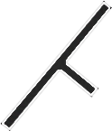
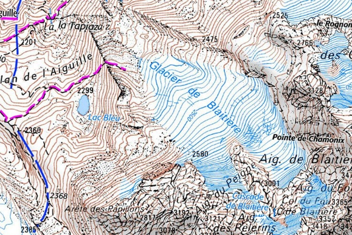
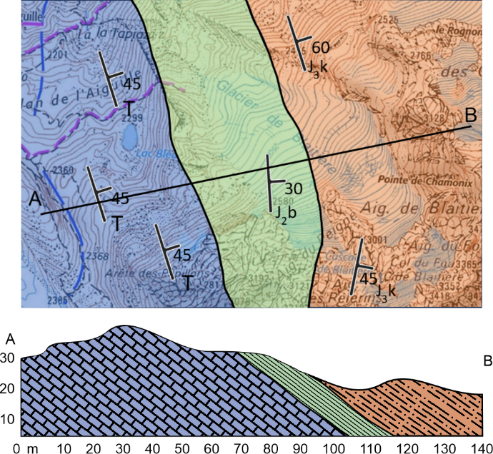

image1 déplacée ? (wrapNone)
…s structures avec une boussole-clinomètre 5.4 FieldMove Clino – carnet de terrain numérique 5.5 De la minute de terrain à la carte géologique 5.6 La carte géologique 5.7 Les coupes géologiques Télécharger la version Word
Dans index.html, chercher : image1

image2 déplacée ? (wrapNone)
…harriage · Fenêtres tectoniques Partie 4 – Géologie alpine Formation des Alpes (rift → subduction → collision) Partie 5 – Cartographie de terrain Carnet de terrain · Boussole-clinomètre · FieldMove Clino / carte / coupes
Dans index.html, chercher : image2

image4 déplacée ? (wrapNone)
… niveau de départ), après (pour valider tes acquis), ou les deux. Tu peux le repasser autant de fois que tu le souhaites. Il n’y a pas de piège : toutes les réponses se trouvent dans ce manuel. Accéder au quiz → [ QUIZ ]
Dans index.html, chercher : image4

image6 déplacée ? (wrapNone)
….3 Mesurer les structures avec une boussole-clinomètre 64 5.4 FieldMove Clino – carnet de terrain numérique 66 5.5 De la minute de terrain à la carte géologique 68 5.6 La carte géologique 70 5.7 Les coupes géologiques 71
Dans index.html, chercher : image6

image8 position sûre
…ne : liquide, composé principalement de fer et de nickel. Sa convection génère le champ magnétique terrestre. Le noyau interne : solide malgré des températures extrêmes (~5 000-6 000 °C), car la pression y est colossale.
Dans index.html, chercher : image8

image9 déplacée ? (wrapNone)
…aques peuvent se déplacer. Faille inverse — Le compartiment supérieur remonte le long du plan de faille. Fais tourner le bloc pour voir le déplacement. Glisse pour faire tourner le bloc · molette ou pincement pour zoomer
Dans index.html, chercher : image9
image10 déplacée ? (wrapNone)
…aques peuvent se déplacer. Faille inverse — Le compartiment supérieur remonte le long du plan de faille. Fais tourner le bloc pour voir le déplacement. Glisse pour faire tourner le bloc · molette ou pincement pour zoomer
Dans index.html, chercher : image10
image11 position sûre
…aques peuvent se déplacer. Faille inverse — Le compartiment supérieur remonte le long du plan de faille. Fais tourner le bloc pour voir le déplacement. Glisse pour faire tourner le bloc · molette ou pincement pour zoomer
Dans index.html, chercher : image11

image13 position sûre
…he. Une roche est un assemblage naturel d’un ou plusieurs minéraux. C’est cet assemblage – sa composition minéralogique, la taille des cristaux, leur agencement – qui détermine le nom de la roche et raconte son histoire.
Dans index.html, chercher : image13

image14 position sûre
… océanique, sombre, fin grain Dolérite Filonien, sombre, grain moyen, dykes océaniques Rhyolite Volcanique, pâle, équivalent volcanique du granite Péridotite Plutonique, manteau supérieur, très sombre, olivine + pyroxène
Dans index.html, chercher : image14

image15 position sûre
…de Quartzite Grès métamorphosé, très dur, ne réagit pas à l'acide Serpentinite Péridotite hydratée, vert sombre, aspect gras, manteau supérieur Métagabbro Gabbro métamorphosé, reconnaissable aux pyroxènes et plagioclases
Dans index.html, chercher : image15

image16 position sûre
…es : Roches détritiques : formées de fragments de roches transportés et déposés. La taille des grains reflète l'énergie du milieu de dépôt. Exemples : conglomérat (galet), grès (sable), siltite (silt), argilite (argile).
Dans index.html, chercher : image16

image17 position sûre
…l) en produisant des bulles de CO₂. Roches évaporitiques : précipitées par évaporation d'eau de mer dans des bassins confinés. Exemples : gypse (dureté 2 sur l'échelle de Mohs – s'érafle à l'ongle), sel gemme, anhydrite.
Dans index.html, chercher : image17

image18 déplacée ? (wrapSquare)
… roche magmatique s'érode → sédiment → roche sédimentaire → enfouie et chauffée → roche métamorphique → fondue → magma → roche magmatique. Ce cycle est continu, mais très lent (millions à centaines de millions d'années).
Dans index.html, chercher : image18
image19 position sûre
… Roches typiques : basaltes en coussins (pillow lavas), gabbros, péridotites serpentinisées, ophiolites Structures : rift, failles normales, fissures éruptives Exemple actuel : dorsale médio-atlantique, rift Est-africain
Dans index.html, chercher : image19
image20 position sûre
…entale, ou deux croûtes océaniques) : la plaque dense plonge dans le manteau. Fusion partielle → volcanisme d'arc, formation de roches plutoniques (granitoïdes d'arc). Métamorphisme haute-pression sur la plaque subduite.
Dans index.html, chercher : image20
image21 position sûre
…nentales) : aucune des deux ne peut facilement plonger (trop légères). La croûte s'épaissit, se déforme, se plisse, se chevauche → formation d'une chaîne de montagnes. Métamorphisme régional. C'est le contexte des Alpes.
Dans index.html, chercher : image21
image22 position sûre
… glissent horizontalement l'une contre l'autre. Pas de création ni de destruction de croûte. Structures typiques : failles décrochantes sub-verticales, bassins en pull-apart. Exemple : faille de San Andreas (Californie).
Dans index.html, chercher : image22

image23 position sûre
… glissent horizontalement l'une contre l'autre. Pas de création ni de destruction de croûte. Structures typiques : failles décrochantes sub-verticales, bassins en pull-apart. Exemple : faille de San Andreas (Californie).
Dans index.html, chercher : image23

image24 position sûre
… glissent horizontalement l'une contre l'autre. Pas de création ni de destruction de croûte. Structures typiques : failles décrochantes sub-verticales, bassins en pull-apart. Exemple : faille de San Andreas (Californie).
Dans index.html, chercher : image24

image25 déplacée ? (wrapNone)
…ère · Asthénosphère · Rhéologie · Roche magmatique · Roche sédimentaire · Roche métamorphique · Granite · Basalte · Gabbro · Calcaire · Dolomie · Gypse · Schiste · Gneiss · Divergence · Subduction · Collision · Foliation
Dans index.html, chercher : image25

image27 position sûre
…rme aujourd'hui sur une plage, tu peux interpréter une ride fossilisée dans un grès de 150 millions d'années. Le mécanisme est le même, seul le temps les sépare. Sans ce principe, une roche sédimentaire resterait muette.
Dans index.html, chercher : image27

image28 position sûre
…) Figures et structures sédimentaires Litage, laminations, rides, granoclassement, surfaces particulières (détaillées en 2.2) Contenu paléobiologique Éléments biominéralisés et fossiles · traces fossiles ou ichnofossiles
Dans index.html, chercher : image28

image29 position sûre
…ontrent les trois schémas qui ouvrent chacune des sous-sections ci-dessous. Dans les archives géologiques, il se traduit par des successions de faciès qui enregistrent une évolution systématique du milieu. Les carbonates
Dans index.html, chercher : image29

image30 déplacée ? (wrapSquare)
…e cycle des carbonates : le sédiment n'est pas seulement érodé puis transporté, il est produit sur place , par les organismes et par précipitation chimique. Le transport ne concerne que la fraction bioclastique. Calcaire
Dans index.html, chercher : image30

image31 déplacée ? (wrapSquare)
…que (fragments de coquilles visibles), calcaire oolithique (grains sphériques concentriques ~0,5 mm), calcaire noduleux (bancs discontinus en nodules, milieu profond), calcaire massif (bancs épais résistants à l'érosion)
Dans index.html, chercher : image31

image32 position sûre
…s se délitent facilement en feuillets ou en éclats. Peu compétentes – elles créent des niveaux de glissement potentiels Milieu : plateforme distale à bassin peu profond, dépôt en eaux calmes Les roches silico-détritiques
Dans index.html, chercher : image32

image33 position sûre
…genèse. Ici le sédiment vient d'ailleurs — il n'est pas produit sur place. La nomenclature des roches silico-détritiques dépend avant tout de la taille des particules qui les composent (classification d'Udden-Wentworth).
Dans index.html, chercher : image33

image34 déplacée ? (wrapSquare)
…e la taille des particules qui les composent (classification d'Udden-Wentworth). Classification granulométrique d'Udden-Wentworth : à chaque classe de taille correspondent un sédiment meuble et une roche consolidée. Grès
Dans index.html, chercher : image34

image35 déplacée ? (wrapSquare)
…z, dureté 7) Structures visibles : laminations obliques, rides de courant, granoclassement Milieux : fluviatile (grès grossiers, laminés), littoral (grès bien triés), éolien (grès à grandes laminations obliques en dunes)
Dans index.html, chercher : image35

image36 déplacée ? (wrapSquare)
…feuilletage) si légèrement métamorphisée Sur le terrain : l'argilite tache les doigts, a une texture savonneuse humide et colle légèrement à la langue Milieux : plaine alluviale, lac, bassin marin calme, zone intertidale
Dans index.html, chercher : image36

image37 position sûre
…g transport fluviatile ; galets anguleux → dépôt proche de la source, peu de transport (cône alluvial, éboulis) Milieux : torrents, cônes alluviaux, littoral à haute énergie, base de séquence transgressive Les évaporites
Dans index.html, chercher : image37

image38 déplacée ? (wrapSquare)
…ents, cônes alluviaux, littoral à haute énergie, base de séquence transgressive Les évaporites Le cycle des évaporites : le transport se fait en phase dissoute , et le dépôt par précipitation lors de l'évaporation. Gypse
Dans index.html, chercher : image38

image39 déplacée ? (wrapSquare)
…es évaporites associées (sel, anhydrite) sont des niveaux de décollement majeurs. En terrain alpin, le Keuper (Trias supérieur) évaporitique joue souvent ce rôle de « savon » facilitant le glissement des nappes Cargneule
Dans index.html, chercher : image39
image40 position sûre
…t, mais aussi la façon dont il est arrivé là. Comprendre les mécanismes de transport permet de lire directement les figures observées sur le terrain – et inversement, de remonter d'une figure au courant qui l'a produite.
Dans index.html, chercher : image40

image41 position sûre
… oscillatoires, liés à l'action des vagues et de la marée, alternent entre deux directions opposées : ils ne produisent pas de déplacement net des particules à long terme, mais ils remobilisent régulièrement le sédiment.
Dans index.html, chercher : image41

image42 position sûre
…variations brutales lors de crues, de tempêtes ou d'événements ponctuels. Ces pics d'énergie expliquent la présence de dépôts grossiers intercalés dans des séries plus fines, ou des successions de faciès très contrastés.
Dans index.html, chercher : image42

image43 position sûre
…plique la présence de niveaux fins dans les milieux calmes ou distaux. Solution : une partie des éléments chimiques voyage dissoute, sans phase solide. C'est le mode dominant dans les milieux carbonatés et évaporitiques.
Dans index.html, chercher : image43

image44 position sûre
…ritiques. Les modes de transport des particules dans un courant. Le diagramme de Hjulström Ce diagramme relie la vitesse du courant et la taille des grains, et délimite trois domaines : érosion, transport, sédimentation.
Dans index.html, chercher : image44

image45 position sûre
…dimentent en micro-avalanches successives sur le versant aval. Ces avalanches construisent des laminations obliques inclinées dans le sens du courant : c'est le critère de terrain qui permet de restituer un paléocourant.
Dans index.html, chercher : image45

image46 position sûre
…éristiques. Attention : cette succession dépend aussi de la granulométrie. Les mégarides ne se forment pas dans les silts et les sables très fins, et les rides ne se forment pas dans les sables grossiers et les graviers.
Dans index.html, chercher : image46

image47 position sûre
…rès forte Le courant est trop intense pour que les mégarides subsistent. Transport par traction et saltation contre le fond. Laminations planes, stries longitudinales (linéation de délit) et figures d'impact et d'érosion
Dans index.html, chercher : image47

image48 position sûre
…port par traction et saltation contre le fond. Laminations planes, stries longitudinales (linéation de délit) et figures d'impact et d'érosion Mégarides et stratifications obliques associées. D'après Harms et al. (1975).
Dans index.html, chercher : image48

image49 position sûre
… al. (1975). ▶ Animation – Crossbedding, Wind and Water Les figures de courant oscillatoire Comme pour les courants unidirectionnels, les figures produites par les vagues dépendent de l'intensité du courant oscillatoire.
Dans index.html, chercher : image49

image50 position sûre
…imentation : les laminations obliques sont symétriques, en chevron, et suivent approximativement le contour de la ride. Conséquence pratique : les rides de vagues donnent l'orientation du paléocourant, mais pas son sens.
Dans index.html, chercher : image50

image51 position sûre
…s d'une turbidite ou d'une crue. Critère de polarité : le grain le plus grossier est à la base – c'est donc le bas du banc. Milieu : turbidites (dépôts de courants de turbidité en milieu profond), cônes alluviaux, crues.
Dans index.html, chercher : image51

image52 position sûre
… fossiles condensés (accumulation de fossiles de plusieurs niveaux). Critère de polarité : les perforations d'organismes foreurs s'enfoncent vers le bas, depuis la surface – elles indiquent donc le sommet du banc induré.
Dans index.html, chercher : image52

image53 position sûre
…on sont sub-horizontaux. S'ils sont verticaux ou fortement inclinés, c'est que la série a été basculée ou que des stylolithes tectoniques se sont développés. Ils te disent que la série a été déformée, pas où est le haut.
Dans index.html, chercher : image53

image54 position sûre
…e inférieure des bancs, en relief. Elles sont particulièrement fréquentes dans les séries turbiditiques, où chaque banc gréseux repose sur les argiles du dépôt précédent – un contexte omniprésent dans la région de Digne.
Dans index.html, chercher : image54

image55 déplacée ? (wrapSquare)
… en amont, effilée en aval ; le sable la moule. B. Load casts : sans courant, le sable dense s'enfonce par gravité dans la boue gorgée d'eau, qui remonte en flammes entre les lobes. Flute casts (moulages d'affouillement)
Dans index.html, chercher : image55

image56 déplacée ? (wrapSquare)
…paléocourant : le bourrelet arrondi pointe vers l'amont, la queue effilée vers l'aval. Le flute cast est ainsi l'un des rares critères qui donne à la fois la polarité et le sens du courant. Load casts (figures de charge)
Dans index.html, chercher : image56

image57 déplacée ? (wrapSquare)
…'enfoncent vers le bas, les flammes d'argile pointent vers le haut. Le critère reste lisible même dans une série renversée. Attention : contrairement aux flute casts, les figures de charge ne donnent pas le paléocourant.
Dans index.html, chercher : image57

image58 position sûre
…le haut, où elles s'évasent. Signification : émersion temporaire – le fond était exondé. Milieu de plaine alluviale, lagon peu profond, sebkha. Critère de polarité : les fentes s'élargissent vers le haut stratigraphique.
Dans index.html, chercher : image58

image59 position sûre
…cation : émersion temporaire – le fond était exondé. Milieu de plaine alluviale, lagon peu profond, sebkha. Critère de polarité : les fentes s'élargissent vers le haut stratigraphique. Fentes de dessiccation polygonales.
Dans index.html, chercher : image59

image60 position sûre
…s autres structures sédimentaires. Zoophycos : trace en spirale ou en éventail produite par un organisme fouisseur en milieu marin calme et profond. Très caractéristique des milieux marno-calcaires de plateforme distale.
Dans index.html, chercher : image60

image61 position sûre
…nité, oxygénation), les fossiles présents et les structures sédimentaires qui s'y forment. En reconstituant la succession des milieux de dépôt à travers le temps, on reconstitue l'histoire paléogéographique d'une région.
Dans index.html, chercher : image61

image62 position sûre
…charge se dépose sur le continent, l'autre atteint l'océan. Le type de système dépend surtout de la distance au relief : cônes alluviaux au pied des montagnes, puis systèmes en tresses et enfin méandriformes vers l'aval.
Dans index.html, chercher : image62

image63 position sûre
…ébris ou de boue, processus assez énergétiques pour transporter des blocs ; en aval, ils s'organisent en couches plus ou moins parallèles, accumulées lors des crues qui redistribuent les matériaux sur la surface du cône.
Dans index.html, chercher : image63

image64 position sûre
…condaires contournant des îlots sableux ou graveleux. Bancs longitudinaux, aggradation verticale. Anastomosé – Plusieurs chenaux stables se séparent et se rejoignent dans la plaine alluviale, formant un réseau permanent.
Dans index.html, chercher : image64

image65 position sûre
…ion chenal → berge → plaine d'inondation constitue la base de la lecture d'un affleurement fluviatile : elle permet de comprendre la dynamique du cours d'eau, la répartition des faciès et l'évolution du paysage alluvial.
Dans index.html, chercher : image65

image66 position sûre
…ant unidirectionnel, milieu fluviatile Base de banc érosive, géométrie de chenal → rivière Absence totale de fossiles marins Fentes de dessiccation dans les argiles → exposition à l'air, milieu très peu profond ou émergé
Dans index.html, chercher : image66

image67 position sûre
…es plaines abyssales. Chacun possède une terminologie propre – et il faut savoir que plusieurs vocabulaires coexistent, selon que l'on décrit la profondeur, la position par rapport aux marées ou le type de sédimentation.
Dans index.html, chercher : image67

image68 position sûre
…la morphologie du plateau continental, l'hydrodynamisme (vagues, houle, marées) et la production de l'« usine à carbonates », c'est-à-dire l'ensemble des organismes et des processus qui fabriquent le carbonate sur place.
Dans index.html, chercher : image68

image69 position sûre
…térieur d'un continent. Dans tous les cas sauf le banc isolé, la proximité du continent apporte sédiments terrigènes, eau douce, nutriments et matière organique – autant de facteurs qui limitent la production carbonatée.
Dans index.html, chercher : image69

image70 déplacée ? (wrapNone)
…fluviatile · Cône alluvial · Barre de méandre · Plaine d'inondation · Lacustre · Continental oxydant · Néritique · Bathyal · Abyssal · Intertidal · Subtidal · Plateforme carbonatée · Rampe · Hémipélagique · Terres noires
Dans index.html, chercher : image70

image72 position sûre
…ale : elles ont été plissées, fracturées, chevauchées, parfois retournées. Comprendre ces déformations est indispensable pour lire une carte géologique, construire une coupe, et interpréter ce que tu vois sur le terrain.
Dans index.html, chercher : image72

image73 position sûre
…de laquelle s'est produit le glissement. Il peut être plan ou légèrement courbe. Toit ("Hanging wall") : bloc situé au-dessus du plan de faille incliné. Mur ("Footwall") : bloc situé en dessous du plan de faille incliné.
Dans index.html, chercher : image73

image74 position sûre
…zontal (déplacement latéral) et le rejet vertical (déplacement en hauteur). Stries de faille : rainures ou cannelures gravées sur le plan de faille par le glissement. Elles indiquent la direction et le sens du mouvement.
Dans index.html, chercher : image74

image78 position sûre
…e de la faille : les couches sont souvent courbées (drag fold) près du plan de faille, dans le sens du mouvement Décalage de marqueurs géologiques observables de part et d'autre (filon, banc repère, contact lithologique)
Dans index.html, chercher : image78
image79 position sûre
…euses qui produit une courbure. Les plis se forment lorsque les roches, soumises à une compression, se déforment de façon plastique plutôt que de rompre. Ils sont caractéristiques des zones de collision, comme les Alpes.
Dans index.html, chercher : image79

image80 position sûre
…ec les couches. Elle est parallèle à la charnière. Plongement de l'axe (plunge) : inclinaison de l'axe du pli par rapport à l'horizontale. Un pli peut avoir un axe horizontal (pli cylindrique) ou incliné (pli plongeant).
Dans index.html, chercher : image80

image81 position sûre
… du pli (dans la charnière). La courbure est convexe vers le haut. Synclinal : pli dont les flancs convergent vers le haut – les couches les plus récentes se trouvent au cœur du pli. La courbure est concave vers le haut.
Dans index.html, chercher : image81

image82 position sûre
…, les couches sont-elles plus récentes que celles des flancs ? → Synclinal Pour déterminer l'âge relatif des couches, utilise les critères de polarité stratigraphique (partie 2.2) et, si possible, le contenu en fossiles.
Dans index.html, chercher : image82

image83 position sûre
…couches du flanc inférieur présentent une polarité inverse (les plus vieilles sont au-dessus des plus récentes sur ce flanc). C'est une configuration très fréquente en terrain alpin, produite par une compression intense.
Dans index.html, chercher : image83

image84 position sûre
…polarité pour confirmer. Série normale : couches de plus en plus jeunes vers le haut stratigraphique Série inverse : couches de plus en plus vieilles vers le haut stratigraphique – signal d'un flanc inverse de pli couché
Dans index.html, chercher : image84

image85 position sûre
…polarité pour confirmer. Série normale : couches de plus en plus jeunes vers le haut stratigraphique Série inverse : couches de plus en plus vieilles vers le haut stratigraphique – signal d'un flanc inverse de pli couché
Dans index.html, chercher : image85

image86 position sûre
…la nappe s'est mise en place, qui n'a pas (ou peu) bougé. Niveau de décollement : le niveau stratigraphique faible qui a servi de plan de glissement. En terrain alpin, le Trias évaporitique (Keuper) joue souvent ce rôle.
Dans index.html, chercher : image86
image87 position sûre
…pile sédimentaire originale, parfois très différente de celle de l'autochtone sous-jacent – c'est ce qui crée des contacts géologiques « impossibles » (des roches très anciennes directement sur des roches très récentes).
Dans index.html, chercher : image87

image88 position sûre
…ur une carte, la demi-fenêtre est ouverte d'un côté. Klippe : l'inverse de la fenêtre – un lambeau de nappe isolé par l'érosion, entouré de toutes parts par l'autochtone. C'est un « îlot » de nappe posé sur l'autochtone.
Dans index.html, chercher : image88

image89 position sûre
…ans la sédimentation, c'est-à-dire une lacune de temps entre deux ensembles de couches : entre elles, la sédimentation s'est arrêtée pendant un temps plus ou moins long, parfois accompagnée d'érosion, avant de reprendre.
Dans index.html, chercher : image89
image90 position sûre
… surface : le plissement a créé un relief, qui s'est ensuite aplani par érosion, avant que la sédimentation ne reprenne par-dessus. La surface de discordance n'est donc qu'une surface d'érosion, jamais un plan de faille.
Dans index.html, chercher : image90

image91 déplacée ? (wrapNone)
…i déversé · Pli couché · Série normale · Série inverse · Nappe de charriage · Allochtone · Autochtone · Niveau de décollement · Fenêtre tectonique · Demi-fenêtre · Klippe · Contact tectonique · Propagation de l'orogenèse
Dans index.html, chercher : image91

image93 position sûre
…s pour comprendre ce que tu vas observer sur le terrain. Pas de détails sur une localité particulière – seulement les clés de lecture générales de l'ensemble de la chaîne. 4.1 Formation des Alpes – du Trias à aujourd'hui
Dans index.html, chercher : image93

image94 position sûre
…ollision continentale : les nappes s'empilent à l'est Oligocène ~34–23 Ma Le bassin s'effondre sous la charge des nappes Miocène à aujourd'hui ~23–0 Ma La déformation atteint les zones externes, puis la chaîne se soulève
Dans index.html, chercher : image94

image95 déplacée ? (wrapNone)
…ù retrouver ses traces aujourd’hui (ophiolites) Mots-clés à maîtriser Téthys alpine · Rift · Subduction · Collision · Métamorphisme haute pression · Schistes bleus · Éclogite · Trilogie germanique · Niveau de décollement
Dans index.html, chercher : image95

image97 position sûre
…on secteur, le groupe entier observe et discute ensemble un log stratigraphique de référence pour la région : c’est la colonne des unités, avec leur âge et leurs caractères, sur laquelle tout le monde s’appuiera ensuite.
Dans index.html, chercher : image97

image98 position sûre
…données personnelle. Un bon carnet te permettra de reconstruire ta journée des semaines plus tard et de localiser chaque observation à son arrêt exact. Il est la base indispensable à toute cartographie, numérique ou non.
Dans index.html, chercher : image98

image99 déplacée ? (wrapNone)
…é perpendiculairement à la direction de pendage. Exprimé en degrés, de 0° à 90°. Notation complète : Direction de pendage/Pendage. Exemple : 130°∠30° = la couche plonge vers l’azimut 130°, avec l’angle de pendage de 30°.
Dans index.html, chercher : image99

image100 position sûre
…é perpendiculairement à la direction de pendage. Exprimé en degrés, de 0° à 90°. Notation complète : Direction de pendage/Pendage. Exemple : 130°∠30° = la couche plonge vers l’azimut 130°, avec l’angle de pendage de 30°.
Dans index.html, chercher : image100

image101 position sûre
…comporte une boussole magnétique pour mesurer la direction de pendage et un clinomètre interne (niveau à bulle inclinable) pour mesurer le pendage. Les deux mesures se font en deux étapes successives sur la même surface.
Dans index.html, chercher : image101

image102 position sûre
…comporte une boussole magnétique pour mesurer la direction de pendage et un clinomètre interne (niveau à bulle inclinable) pour mesurer le pendage. Les deux mesures se font en deux étapes successives sur la même surface.
Dans index.html, chercher : image102

image103 position sûre
…uis et notes texte au même endroit. Elle ne remplace pas la compréhension – elle accélère la saisie et garantit la géolocalisation automatique de chaque mesure. Ressource vidéo – le geste à la boussole et FieldMove Clino
Dans index.html, chercher : image103

image104 position sûre
…droit. Elle ne remplace pas la compréhension – elle accélère la saisie et garantit la géolocalisation automatique de chaque mesure. Ressource vidéo – le geste à la boussole et FieldMove Clino https://youtu.be/PQUfpKIfbN0
Dans index.html, chercher : image104
image105 position sûre
… boussole et FieldMove Clino https://youtu.be/PQUfpKIfbN0 https://youtu.be/XIejEV6EKGQ . Ressource en ligne pour jouer et mieux comprendre la relation entre géologie, topographie et mesures https://www.visiblegeology.com
Dans index.html, chercher : image105

image106 déplacée ? (wrapNone)
…t ensuite de tracer les limites entre unités et de les colorer. Elle se construit progressivement, au fur et à mesure de la journée : ce n’est pas un exercice de fin de stage, mais un document que tu remplis en marchant.
Dans index.html, chercher : image106

image107 position sûre
… le sachet. Reporte ce numéro dans le carnet avec le numéro d’arrêt, les coordonnées et une brève description. Un échantillon non étiqueté sur le moment se mélange vite avec les autres et devient inexploitable au retour.
Dans index.html, chercher : image107

image108 déplacée ? (wrapNone)
…n de pendage et le pendage à la boussole-clinomètre (5.3) ou avec FieldMove Clino (5.4), puis place le symbole conventionnel correspondant directement sur la minute, au point exact de la mesure, avec sa valeur en degrés.
Dans index.html, chercher : image108

image110 position sûre
…n de pendage et le pendage à la boussole-clinomètre (5.3) ou avec FieldMove Clino (5.4), puis place le symbole conventionnel correspondant directement sur la minute, au point exact de la mesure, avec sa valeur en degrés.
Dans index.html, chercher : image110
image106 déplacée ? (wrapNone)
…nute progressivement plutôt qu’en fin de journée : cela permet de repérer tout de suite une incohérence (deux couleurs qui se touchent sans limite tracée, par exemple) pendant que l’affleurement est encore sous les yeux.
Dans index.html, chercher : image106

image111 position sûre
…nute progressivement plutôt qu’en fin de journée : cela permet de repérer tout de suite une incohérence (deux couleurs qui se touchent sans limite tracée, par exemple) pendant que l’affleurement est encore sous les yeux.
Dans index.html, chercher : image111

image112 position sûre
…nt par la couche la plus récente dont tu connais le toit sur toute sa longueur. Complète avec la légende (un figuré conventionnel par lithologie, cohérent avec celui de la carte) et les échelles horizontale et verticale.
Dans index.html, chercher : image112